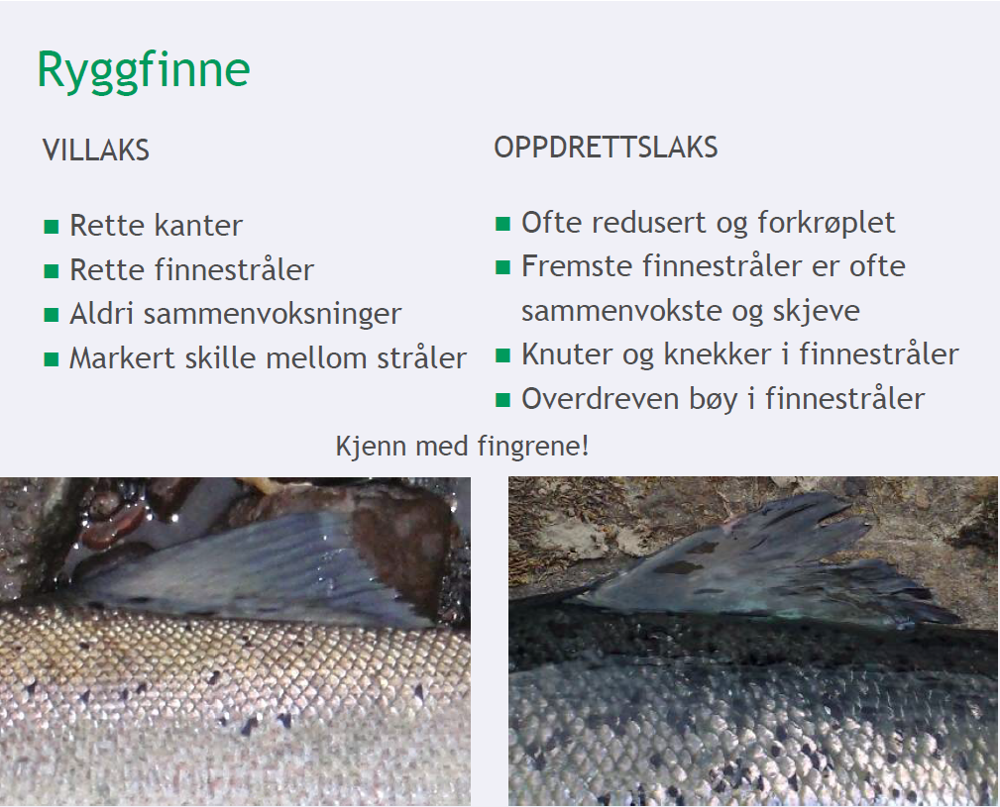
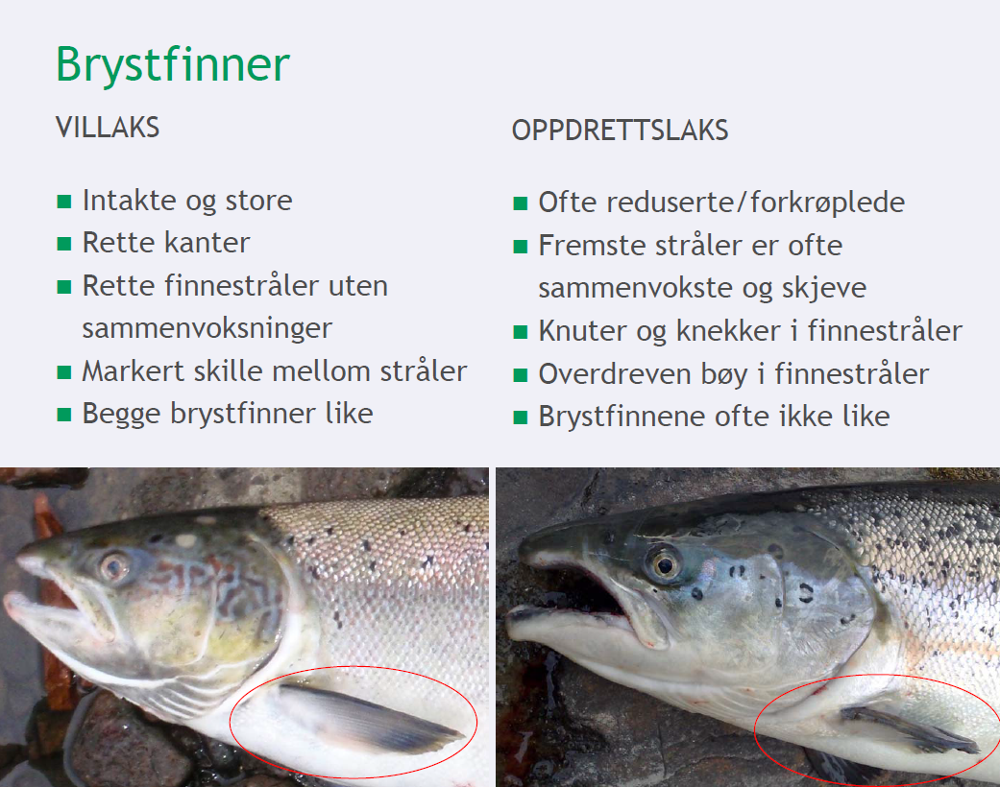
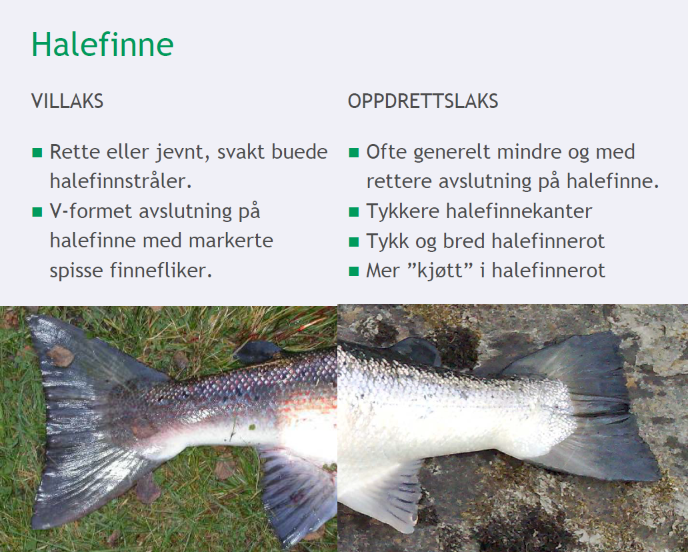

<ion-view title="Fish app">
    <ion-nav-buttons side="left">
        <button menu-toggle="left" class="button button-icon icon ion-navicon"></button>
    </ion-nav-buttons>
    <ion-content class="has-header">
        <ion-slide-box>
          <ion-slide>
            <div class="box fish"></div>
          </ion-slide>
          <ion-slide>
            <div class="box fish"></div>
          </ion-slide>
          <ion-slide>
            <div class="box fish"></div>
          </ion-slide>
        </ion-slide-box>
    </ion-content>
</ion-view>
